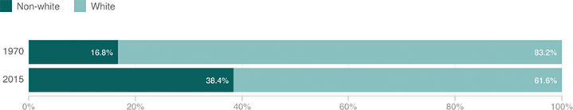

The U.S. Population By Race And Ethnicity, 1970 Vs. Today
This shows how much more diverse the U.S. has become since the 1970 census. Back then, around 83 percent of the nation was white. As of 2015, only around 62 percent were.

Notes
“White” here refers to people who are white and non-Hispanic.